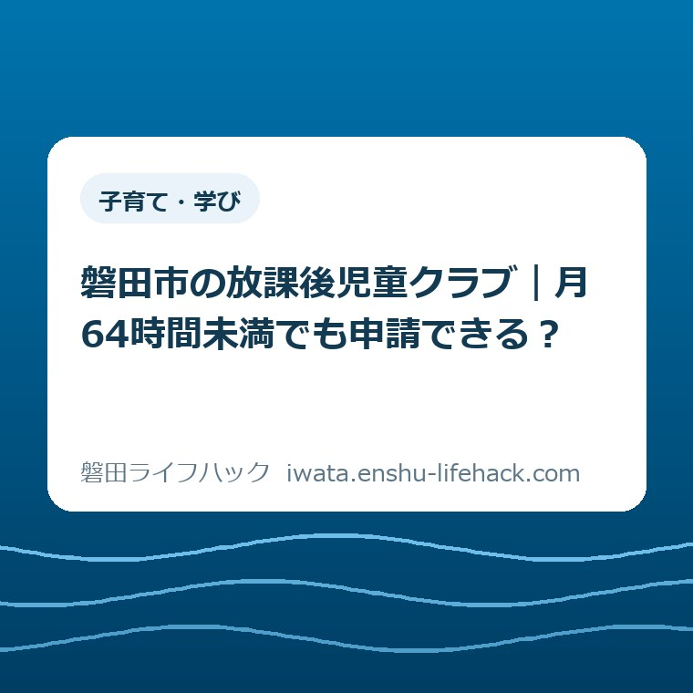
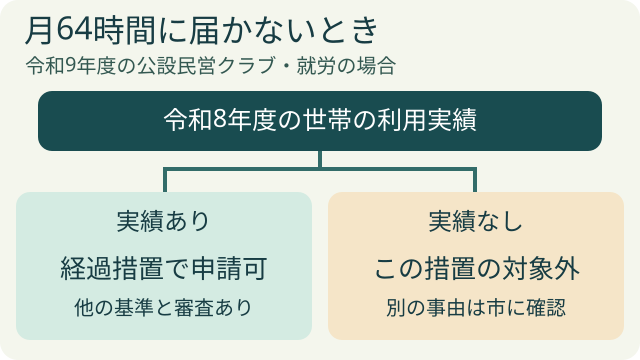
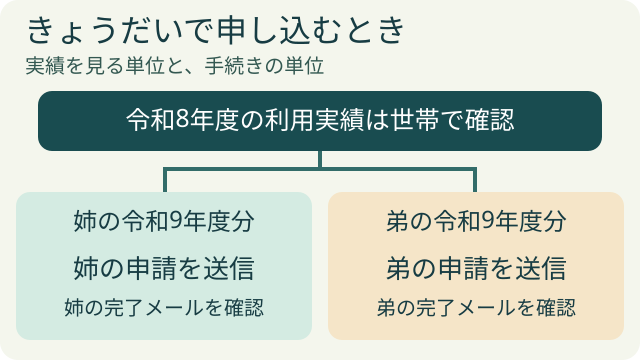

更新：2026.11.14 子育て・学び
磐田市の放課後児童クラブ｜月64時間未満でも申請できる？

この記事の要点
Q. 月64時間に届かない働き方でも、来春の児童クラブに申し込めますか。
A. 磐田市の令和9年度の公設民営クラブでは、令和8年度に市児童クラブを利用した世帯の児童は、保護者の勤務が月64時間未満でも申請できます。入学する下の子も世帯単位で確認します。他の利用条件と審査はあり、継続が自動で決まるわけではありません。
11月17日夜〜18日朝は電子申請できません
市が案内するLoGoフォームのメンテナンスは、2026年11月17日（火）22時〜11月18日（水）5時です。この間は申請できません。受付期間中でも利用できない時間があるため、添付書類をそろえ、時間に余裕を持って入力を完了してください。
市公式の募集・メンテナンス案内を確認してください。受付期限は11月30日23時59分です。
申請停止の予定時間と受付期限を2026年11月14日に市公式資料で確認しました。ページ全体や個別の利用可否を再確認した意味ではありません。
お迎えの時刻からは、月の勤務時間はわからない
お迎えに間に合うように仕事の終わりをずらし、それでも間に合わない曜日だけ家族に頼む。そうして一週間を組んでいる家庭にとって、「月64時間」という数字は、帰宅後にもう一つ持ち帰る宿題です。勤務表を見て数時間足りないとわかったとき、来年の放課後をどうするか、職場に何を頼むかまで一度に決める必要はありません。
磐田市が2026年11月2日に受け付けを始めたのは、2027年4月からの公設民営の放課後児童クラブの一斉募集です。保護者が仕事などで家庭で子どもをみることが難しい時間に、小学生が遊んだり生活したりする場所です。利用を希望する理由、子どもの学年、世帯の利用実績によって、読むべき条件が変わります。
まず、手元の案内の表紙を見てください。「令和9年度」は子どもが通う年度です。申し込むのは令和8年、つまり2026年の11月です。一方、経過措置で市が尋ねているのは令和8年度の利用実績。申込日を起点に過去12か月を数える仕組みとは書かれていません。ここを取り違えると、探す通知が一年ずれてしまいます。
市の案内には、公設民営とは別に、民設民営のクラブや民間放課後アフタースクールへの入口もあります。施設名に「児童クラブ」とあっても、募集先は一つではありません。以前申し込んだ先がわからないときは、通った施設名を確認するほうが、いきなり就労時間を計算し直すより先です。
月64時間は、どの日に適用されるのか
市の募集案内の変更点を読むと、令和8年度までの授業日利用では、平日の勤務日数に加えて、午後の決められた時間帯に勤務が何時間重なるかを見ていました。長期休業期間には別の時間帯と勤務時間の条件がありました。以前申し込んだ保護者が「週に何日働きますか」と聞かれた記憶を持っていても不思議はありません。
令和9年度の授業日と長期休業期間について、市が示す就労基準は、通常の勤務が月64時間以上であることです。ちょうど64時間なら「以上」に含まれます。市が月単位で示した数字を、家庭で週当たりの数字に換算し、それを新たな合否の線として使う必要はありません。
たとえば説明用に、1日4時間の勤務が月16日なら計64時間、同じ勤務が月15日なら計60時間です。退勤時刻が同じでも月の合計は変わります。この掛け算は違いをつかむための例です。実際の判定は勤務先が証明する内容に沿うので、休憩の扱いや変則的なシフトまで、この例から決めることはできません。
とりわけ注意したいのが、市のいう「常態」です。応援に入った一か月だけ時間が伸びた、子どもの発熱で休んだ一か月だけ短かった。その一枚の給与明細から通常の勤務を説明し切れないことがあります。契約時間と実績が違うときは、数字を選んで書き込む前に、勤務先の証明と市の記載要領を照らせば、何がまだわからないのかがはっきりします。
きょうだいが令和8年度に通っていたら
月64時間に届かない家庭に関係するのは、市公式ページで就労基準の表のすぐ下にある「利用基準の経過措置」です。令和8年度に磐田市児童クラブを利用した実績がある世帯の児童については、月64時間を満たさない世帯でも申請を認めています。表だけを読んで画面を閉じると、自分に関係する一文を読み落とします。
仮に、小学二年の姉が令和8年度に市の児童クラブに通い、弟が令和9年4月に一年生になる家庭を考えます。弟には児童クラブに通った経験がありません。それでも二人が同じ世帯にいるなら、読む箇所は「弟の利用歴」ではなく「その世帯の利用実績」です。保護者の勤務が月60時間だという情報だけで、弟の申請をあきらめる必要はありません。
では、上の子が通っていたのが令和7年度で、令和8年度には世帯の誰も通っていない場合はどうでしょう。上の子に利用経験はあっても、市の書く年度とは一致しません。以前使ったことがあるかという質問と、指定された年度に使ったかという質問では、同じ家族でも答えが変わります。
もう一つ、申請書を出した記憶と、実際に利用した記憶を分けておきたいところです。申請した後で勤務が変わり、通わなかったことも考えられます。市の公開文は利用実績を条件にしています。通知が残っていても判断に迷う場合は、その通知だけで実績があると決めず、児童クラブグループへクラブ名と状況を伝えてください。

同じ世帯で確かめること、子どもごとに書くこと
経過措置の確認が一世帯分で済むことと、申請が一世帯一件で済むことは別です。市は、きょうだいがともに利用を希望する場合にも、子ども一人ずつ申請するよう案内しています。姉の利用を続けたい家庭で弟も申し込むなら、最後に手元に残る申請の控えも二人分になります。
家族で準備するなら、紙の上に二人の名前を一行ずつ書き、それぞれの横に「令和9年4月の学年」「希望する期間」を置くと見通しが立ちます。共通の欄には令和8年度に通った子の名前とクラブ名だけ。これは市へ出す様式ではありません。姉の欄を埋め終えたのに弟の分も終わったと思い込むのを防ぐための、家の中の控えです。
新一年生の保護者は、秋に学校関係の案内を何通も受け取ります。学校への提出物と児童クラブの控えは、同じ封筒にまとめても表に別々の用件を書いておくと取り違えにくくなります。学校に上がる準備を整理するなら、磐田市の就学時健康診断の記事も参照できます。健診を受けたこと自体はクラブ利用の申請にはなりません。
令和9年度に市内の小学校に通う見込みの新一年生から新六年生までが対象です。そのうえで、就労や長期の疾病などにより家庭での保育が難しいこと、きょうだいの利用分も含めて利用料などの滞納がないことが利用基準に並びます。経過措置で読み替えられるのは月の就労時間の条件です。それ以外も済んだつもりで申請するのは早計です。

土曜に預けたい家庭は、曜日を一つ書き添える
授業日と長期休業期間には同じ月時間の基準が示されていますが、土曜は土曜の勤務、祝日は祝日の勤務という条件が加わります。たとえば週末の仕事が土曜だけの家庭では、月の時間数が基準に達していても、その事実だけで祝日の利用条件まで説明することはできません。
勤務先がシフト制で、土曜日に必ず勤務するとは限らない家庭もあるでしょう。市に聞きたいのは「シフト制でもいいですか」という大きな問いより、「月の勤務はこの程度で、土曜勤務はこの頻度です。就労証明書ではどこを見ていただけますか」という具体的な問いです。市の回答を受けてから勤務先に記載を頼むほうが、同じ書類を往復させずに済みます。
月64時間に満たず、経過措置に当たる家庭も同様です。市の表には土曜・祝日の当日勤務が別に書かれており、経過措置の文章が明示するのは「月64時間以上」の部分です。土曜を利用したいなら、担当者には「経過措置を確かめたい」という用件に「土曜勤務があります」を一言添えてください。どの曜日の利用を見込むかで相談の中身が変わります。
送迎にも曜日の区別が効きます。募集案内では、土曜・祝日に開所する場所として四か所を挙げています。ふだん学校から歩いて通うクラブと同じ場所か、家族が迎えに行ける場所かは、勤務時間表からは読み取れません。希望日を決めるときには、募集案内の「開所日等」の欄でその曜日の行き先も合わせて見てください。
就労だけでは説明できない家庭は、申請理由の欄へ
令和8年度の利用実績がなく、勤務が月64時間に満たない場合、市が明記した経過措置には当てはまりません。一方、就労は家庭で保育が難しい理由の一つです。募集案内には保護者の疾病や負傷、介護・看護、就学などについても、それぞれの事情を証明する書類が載っています。自分の事情がどこに当たるかは、時間の足し算とは別の問いです。
たとえば保護者の一人が働き、もう一人が長期の治療を受けているとします。この家庭でまず整理するのは、二人の勤務時間を合計すると何時間になるかではありません。それぞれがどんな事情で放課後の保育を担えないかです。公式の募集案内には申請理由別の表があります。該当欄が二つに見えるときは、自己判断で一方を消す前に担当へ相談できます。
事情を伝える相手も選べます。仕事の契約や所定の勤務時間について、記録をもとに説明できるのは勤務先です。その証明で市の就労基準をどう確認するのか、別の理由なら何が必要かを案内するのは市の放課後活動課です。職場に家庭の事情を細かく説明して利用可否まで尋ねなくても、問い合わせは必要な相手に分けられます。
証明書は新しく頼む前に、手元の控えを開く
募集案内には、保育園の入園申請で提出した書類や、きょうだいの申請に使った書類の写しを使える旨があります。写しは申請者が用意し、児童氏名や証明日などが有効であるかを確かめます。市が保育園のファイルから自動で取り寄せてくれる、という意味には読めません。勤務先に同じ証明を二度頼む前に、使える控えが自分の手元にあるかを見る価値があります。
証明書類には、申請日の三か月以内に発行されたものという条件があります。名前が正しくても、保管していた前年分をそのまま添付はできません。反対に、保育園の手続きで受け取ったばかりの写しなら、日付と記載内容を確認するところから始められます。下の子の分も準備している家庭には、磐田市の保育園入園に向けた書類準備の記事があります。
自営業で雇用主に発行を頼めない場合は、募集案内の必要書類の表を「雇用」の一行だけで閉じないでください。「自営業等」の行と注記には、自営業主は代表として自分で証明することが書かれ、事業を示す資料の欄もあります。就労時間の経過措置が使えるかという話と、働き方を何で示すかという話は、同じ家庭でも別々に確認できます。
申請は原則として電子申請です。写真やPDFを添付するときは、書類の全体と文字が読めるかを、送る人の画面で一度開いてみてください。家族から転送された写真の端に証明日が写っていないと、有効期間をこちらでも確認できません。インターネット環境などの事情で電子申請が難しい場合には、募集案内で個別相談が案内されています。
利用の見通しが立つ日を、勤務の相談と分けておく
一斉募集の受付は2026年11月2日から11月30日までです。最終日は午後11時59分までに入力を完了するよう市が案内しています。送信完了後は申請完了メールが届きます。きょうだいの一人分だけメールが見当たらないときは、もう一度送る前に、控えと受信状況を確かめてください。市も重複申請に注意を呼びかけています。
そのメールでわかるのは申請を送ったことです。授業のある日の利用を希望する場合、募集案内で示される審査結果通知の目安は2027年2月17日です。11月のうちに来春の働き方を職場に伝える必要があるなら、「申請した日」と「結果が出る目安」を違う欄に書けます。メールを受けた日に利用が決まったものとして勤務を約束する必要はありません。
長期休業期間だけ希望するときは、通知の目安も一律ではありません。たとえば令和9年度の4月春休みのみなら同じ2月17日が目安ですが、夏休みのみなら6月中旬です。一方、目前の2026年の冬休みは令和8年度の話です。日程を混同しそうなときは、令和8年度の冬休み児童クラブと勤務表の記事で対象年度を見分けてください。
大石の視点｜勤務を増やす相談は、利用実績を確かめてから
良い点は、きょうだいのいる家庭が、上の子から下の子へ切れ目なく放課後の生活を考えられるところです。弟本人に前年の利用歴があるかと問われたら、新入生の家庭はそこで立ち止まります。「世帯」という二文字が主語に入ることで、同じ勤務条件でも、相談できる入口が一つ残ります。
注文したい点は、経過措置に当たる家庭の例を、就労基準の表のすぐそばに一つ置いてほしいことです。「姉が令和8年度に利用し、弟が令和9年度に入学する場合」と一行あれば、保護者は自分の家族をそこに重ねられます。問い合わせる側にも答える側にも、年度やきょうだいの関係を最初から説明する負担が減るはずです。
私なら、職場に勤務を増やしてほしいと相談するのを先にするか、少し迷います。締切が見えていると、先に時間を確保したほうが確実に思えるからです。でも、勤務を一日増やせば、その日の迎えをする人も必要になります。まだ使える選択肢を確かめていない段階で、家族と職場の予定を動かすことはありません。順番は、利用実績の確認が先です。
対案・結論｜今日見るのは、令和8年度に通ったクラブの記録一つ
スマートフォンの予定表でも、家に残っているクラブとの連絡でもかまいません。令和8年度に誰がどこのクラブへ実際に通ったのか、一件だけ確認してみてください。これは申請時にその記録の提出が必要という話ではありません。自分の家庭について、市の経過措置のどこまではっきり答えられるかを知るためです。
判断がつかなければ「令和8年度に上の子がこのクラブへ通いました。下の子が令和9年度に入学し、勤務は月○時間です。この利用は経過措置の実績に含まれますか」と聞けます。磐田市放課後活動課児童クラブグループの電話は0538-37-2773、電話受付は午前8時30分から午後5時15分です。個別の事情を伝えたうえで、市の回答を基に次の準備を決めてください。
よくある質問
上の子だけが令和8年度に利用しました。新一年生の下の子も申請できますか。
市が経過措置の対象にしているのは、令和8年度に磐田市児童クラブの利用実績がある世帯に属する児童です。同じ世帯であれば、下の子本人に利用歴がなくても月64時間の条件について経過措置を確認できます。二人とも令和9年度に利用を希望する場合は、それぞれの子どもについて申請してください。
世帯に利用実績がなく、月60時間勤務ならどう考えればいいですか。
令和8年度に世帯の利用実績がなく、通常の勤務が月60時間なら、就労を理由とする月64時間の基準にも、この経過措置にも該当しません。疾病や介護など、別に家庭での保育が難しい事情がある場合は、令和9年度募集案内の申請理由別の表を確認し、市に必要書類を尋ねてください。
経過措置の対象なら、土曜日や祝日も利用できますか。
市が経過措置で明示しているのは月の就労時間です。土曜利用には土曜勤務、祝日利用には祝日勤務という条件が別にあります。経過措置の対象に当たることだけで希望日の利用が決まるわけではありません。不定期の勤務など個別の扱いは、希望する曜日を示して児童クラブグループに確認できます。
2026年11月4日確認。受付や利用条件は変更されることがあります。ご家庭の事情に合うか、最後に磐田市の令和9年度放課後児童クラブ利用申請ページで確かめてください。
参考にした公式情報
- 磐田市「令和9年度 放課後児童クラブ利用申請」（2026年11月4日確認）
- 磐田市教育委員会「令和9年度 磐田市放課後児童クラブ利用募集案内」日本語PDF（同日確認）
最終確認日：2026-11-04 ／ 本記事は公表情報と執筆者の見解を分けて記載しています。制度・数値・公開状況は変更される場合があるため、最新情報は磐田市公式ページでご確認ください。
 執筆：大石浩之（磐田市・不動産業／宅地建物取引士）
執筆：大石浩之（磐田市・不動産業／宅地建物取引士）